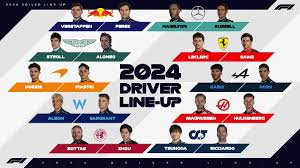
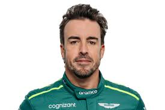
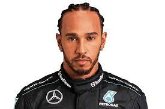

El videojuego de Fórmula 1 ofrece a los jugadores la experiencia de correr en los circuitos oficiales del campeonato de Fórmula 1. Los jugadores pueden competir como pilotos de equipos y correr en carreras individuales, temporadas completas o en modo multijugador en línea. El juego proporciona realismo en la conducción, estrategia de carrera y personalización de vehículos

Precio: 29.99$
Personajes:
| Fernando Alonso |  | Fernando Alonso es un destacado piloto de carreras español conocido por su exitosa carrera en la Fórmula 1. Nacido el 29 de julio de 1981 en Oviedo, España, Alonso ha logrado numerosos éxitos en el automovilismo a lo largo de su carrera |
| Lewis Hamilton |  | Lewis Hamilton es un renombrado piloto de carreras británico que compite en la Fórmula 1 para el equipo Mercedes-AMG Petronas Formula One Team. Nacido el 7 de enero de 1985 en Stevenage, Inglaterra, Hamilton es uno de los pilotos más exitosos en la historia de la Fórmula 1. |
| Max Verstappen |  |
Max Verstappen es un destacado piloto de carreras neerlandés que compite en la Fórmula 1 para el equipo Red Bull Racing. Reconocido por su habilidad, valentía y competitividad. |